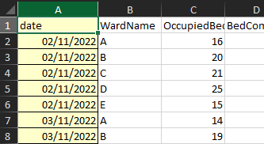

install.packages("pacman")
library(pacman)R beginner’s club 2024-09-12
Help! I’m usually unable to run code that people send me
This can be really difficult, because you generally need your code to run at least a bit before you can find error messages. Three areas to try if you can’t get anything to behave itself.
Check that your R setup isn’t broken
You can try running something dead simple in the console to get a quick idea if your R installation is working at all (2+2 is perfect). If that doesn’t work, and assuming that you’re using RStudio/Posit a sensible sequence of steps might be: + to restart R (Ctrl + Shift + F10) + or to terminate R (from the Session menu) + refresh the page (for the web version) or reopen Rstudio
If none of that works, the chances are that you’re going to need to refer to your IT/eHealth colleagues, as it looks like something big and serious is broken.
Package loading
Another area where things often misfire is package loading. If you’re getting unexpected could not find function "xxxx" errors, I’d be looking to check package loading.
If you’re only using a few packages, make sure that you’ve done then install.packages() / library() dance to ensure both that packages are installed and attached. That gets boring and error prone if you’re trying to sort out loads of packages, and it might be easier to use pacman to manage packages:
Then replace your calls to library(packagename) with calls to p_load(packagename). p_load has the advantage that it will install missing packages, and then attach them, which makes for much less messing around with installing then attaching.
Working directory / setwd() / project
This is another area where scripts can completely fail. Wherever possible, R code is best run in a project, which takes care of most of the problems with setting paths and translating them across computers.
Is there a nice way to write formatted dates to xlsx/csv?
Yes, there is. In fact, there are a couple of ways of doing it. The ‘proper’ way for Excel is to use the openxlsx package to set a date format. This is great when it works, but pretty complicated to set up. And I need to extend thanks to Kirsty Mangin (NHS Golden Jubilee) for coming to the rescue with the following code:
library(openxlsx)
dat <- readxl::read_xlsx("s01_data.xlsx") # here's the data we want to format
filename <- "openxlsx.xlsx" # for the new .xlsx file we're going to create
wb <- createWorkbook(title = filename) # create an openxlsx workbook object in R
addWorksheet(wb = wb, "sheet one") # add a worksheet to that book named "sheet one"
writeData(wb = wb,
x = dat,
sheet= "sheet one",
startCol=1,
startRow=1,
colNames=TRUE) # write the data into that worksheet
date_style <- createStyle(
fgFill = '#FFFFCC',
numFmt = "dd/mm/yyyy",
border = 'TopBottomLeftRight',
borderStyle = 'thin') # then create a date style
addStyle(wb,
sheet="sheet one",
date_style,
gridExpand=T,
cols = 1,
rows = 1:nrow(dat)) # then apply that date style
saveWorkbook(wb, "styled.xlsx") # finally, save the workbook
This is fantastic, but bulky. If you’re after something more casual (and more .csv friendly) you can convert your date to a formatted text string using lubridate:
readxl::read_xlsx("data/s01_data.xlsx") |>
dplyr::mutate(nice_date = lubridate::stamp_date("Jan 13 2021")(date)) # A tibble: 1,500 × 6
date WardName OccupiedBeds BedComp ClosedBed nice_date
<dttm> <chr> <dbl> <dbl> <dbl> <chr>
1 2022-11-02 00:00:00 A 16 20 2 Nov 02 2022
2 2022-11-02 00:00:00 B 20 20 0 Nov 02 2022
3 2022-11-02 00:00:00 C 21 22 1 Nov 02 2022
4 2022-11-02 00:00:00 D 25 30 2 Nov 02 2022
5 2022-11-02 00:00:00 E 15 22 3 Nov 02 2022
6 2022-11-03 00:00:00 A 14 20 0 Nov 03 2022
7 2022-11-03 00:00:00 B 19 20 3 Nov 03 2022
8 2022-11-03 00:00:00 C 18 22 0 Nov 03 2022
9 2022-11-03 00:00:00 D 26 30 0 Nov 03 2022
10 2022-11-03 00:00:00 E 13 22 0 Nov 03 2022
# ℹ 1,490 more rowsAny tips for working in R with limited RAM?
This was an inquiry from someone trying to work in R in Windows with 8gB of RAM. That’s going to be a challenge, unfortunately, especially if you need to run other memory-hungry stuff concurrently (Teams, e.g). R doesn’t have much in the way of memory management, so aside from patience, the general advice is to keep e.g. the data that you’re working with as small as possible. You’ll usually load your working data into memory, and so if that data is larger than the available memory R will slow to a crawl as it’s forced to write that data back to disk again.
One important exception: R gets very memory-inefficient if you grow objects. If you’ve got a choice between growing an object:
a <- vector("numeric")
for (i in 1:100){
a <- c(a, i)
}Or creating an object, and then assigning into it:
b <- vector("numeric", 100L)
for (i in 1:100){
b[i] <- i
}You should always choose the latter.